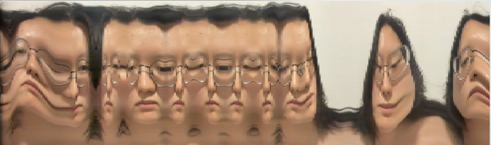

Introduction
Slicer is an interactive installation experimenting with viewers’ movement and real-time video to form moving images. Based on the slit-scan technique with optical flow, it encourages the audience to use physical motion to influence the changing pattern of the slit pictures. It is abstract and fragmented, compressing space into a harmonious whole using the continuity of time. When the motion stops, the image also stops. It showcases the condensation of space-time and an illusion of movement.
Concept and Background Research
Slit-scan is an image processing technique that stacks spatial slices from different times in sequence. It breaks the fixed spatiotemporal constraints in the traditional image-making method and visually condenses the dynamic changes of time and space into a static image. Its expressive power in spatiotemporal extension inspired me to select one vertical line of pixels, which means one slice from each frame, as the basic unit of images. My question is how the different arrangements and combinations of slices create the correlation and rhythm between space and time.
To explore the narrative pattern with non-linearity and coexistence of different time zones, I chose body movement as the input. It is because our bodies are embedded in the world through inhabiting the spaces and experiencing time. As The Horse in Motion presents, visualising motion in images is a possible approach to diving deeply into spatiotemporal correlations. Besides, creative programming with computer vision provides possibilities for creating diverse visual compositions and interaction patterns. Referring to the Liquid Time Series, the camera presents an engaging "point of view" for the audience. They change their movement according to the image presented, and each slit picture is affected correspondingly. This two-way communication process visualises the complex relationship between time and space into a combination of slices. Slicer is an open experiment, and I look forward to the birth of unknown images.
Technical Implementation

The interaction system is based on calculating the average optical flow of all pixels, which compares the current video frame to previous video frame. When the viewers move their bodies, the computer will scan a certain slice and combine them as stacks or collections. There are three sets of experiments to explore the possibility of changing the spatiotemporal combinations in images through different trigger patterns with physical movement.
1.The average direction of body movement is divided into left and right to control the centre slit picture to move in the corresponding direction.
2.he live video is divided into 16 segments. The body motion will trigger the leftmost slice within each grid panning in a left-right round trip.
3.I define a rectangular slice in terms of the average direction of body movement and rearrange them to create a complete video stream.
In addition, I have set up two different presentation modes and used the keyboard as the auxiliary input to facilitate online interaction. The first mode provides the audience with hints from the video and graphics to help them understand the relationship between bodily movement and images. The second mode hides the hint function and encourages people to explore themselves, making it suitable for exhibition sites.
Reflection and Future Development
During the process, the large number of live video slices slowed down the code's running speed, which was frustrating sometimes. I tried to solve this problem by changing the pixel density value, but the stuttering could not be avoided. Another problem is that the video's mirror mode confused me on calculating the position of the source slice and its placement on the canvas.
Not only did I suffer from bugs, but I had a lot of fun completing this project. I like the body fragments and the surprisingly odd visual effects. I learned how to continuously iterate and develop from the most basic slit-scan code, and each experiment result is useful and exciting. What’s more, at the testing stage, I find out that the audiences’ expectations for the image sometimes contradict their behaviour. It creates interesting subtle deviations and a sense of dissonance, hinting me the people’s strong control over mastering the content of the image. It is a good inspiration for me to delve deeper into the relationship between people and images. For example, in the first mode, when two viewers walk in opposite directions, which direction will the slice follow? Can it be seen as the flow and confrontation of power in images? Additionally, I hope to try combining it with dance. I look forward to seeing it as a part of live performances.
References
- CV-examples. Available at: https://kylemcdonald.github.io/cv-examples/ (Accessed: March 25, 2023).
- 11.2: Video photobooth / muybridge style animation - p5.js tutorial (2016) YouTube. YouTube. Available at: https://www.youtube.com/watch?v=oLiaUEKsRws (Accessed: April 18, 2023).
- 11.7: Slit-scan video - p5.js tutorial (2016) YouTube. YouTube. Available at: https://www.youtube.com/watch?v=YqVbuMPIRwY (Accessed: April 15, 2023).
- HTML dom document getelementbyid() (no date) HTML DOM Document getElementById() Method. Available at: https://www.w3schools.com/jsref/met_document_getelementbyid.asp (Accessed: April 27, 2023).
- Reference (no date) reference | p5.js. Available at: https://p5js.org/reference/ (Accessed: April 22, 2023).
- Scan Painting - VAMOSS (no date) OpenProcessing. Available at: https://openprocessing.org/sketch/1103031 (Accessed: April 20, 2023).
- Jaschko, S. (2003). Space-time correlations focused in film objects and interactive video. Future cinema: the cinematic imaginary after film, 340-345.
- Stern, N. (2013) Interactive art and embodiment: The implicit body as performance. Canterbury: Gylphi Limited.
- Paul, D. (2004) Where the action is: The Foundations of Embodied Interaction. Cambridge: MIT Press.
- Eadweard, M. (1878)The Horse in Motion. United Kingdom.
- General 1 - TX-transform (no date) tx. Available at: https://www.tx-transform.com/technology (Accessed: April 16, 2023).
- Golan Levin and collaborators (no date) An Informal Catalogue of Slit-Scan Video Artworks and Research - Golan Levin and Collaborators. Available at: http://www.flong.com/archive/texts/lists/slit_scan/index.html (Accessed: April 16, 2023).
- Liquid time series (2002) Camille Utterback. Available at: http://camilleutterback.com/projects/liquid-time-series/ (Accessed: May 1, 2023).